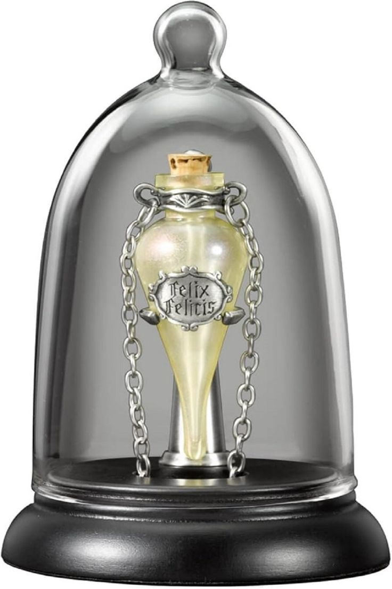

Felix Felicis – Liquid Luck’s Gleam
"Blessed by Fortune’s own hand—handle with reverence, for ambition overreached can sour fate’s favor."

Description
Felix Felicis, commonly known as Liquid Luck, grants the drinker a period of unusually good fortune. Events align, choices succeed, and obstacles melt away—for a time. It is rarely brewed due to its difficulty, and misuse is discouraged by magical law.
Ingredients
- 1 fresh ashwinder egg
- 2 teaspoons grated horseradish
- Juice of 1 squill bulb
- 3 chunks murtlap tentacle, minced
- A dash tincture of thyme
- 1 pinch occamy eggshell powder
- 1 pinch common rue, powdered
Steps
- Break ashwinder egg into cauldron; stir over low flame until golden shimmer appears.
- Blend in horseradish; beat vigorously for 20 seconds.
- Pour in squill juice; stir in figure-of-eight.
- Add murtlap tentacle; increase heat until potion glows amber.
- Drip in tincture of thyme and stir slow clockwise until fragrant.
- Dust occamy eggshell powder; stir until liquid takes on a molten gold ripple.
- Sprinkle rue; one final vigorous anticlockwise stir.
- Whisper "Felixempra!" as you wave wand overhead to seal the brew.
Home